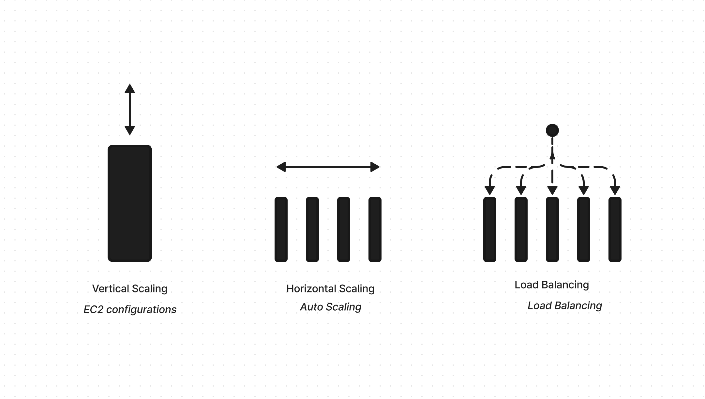
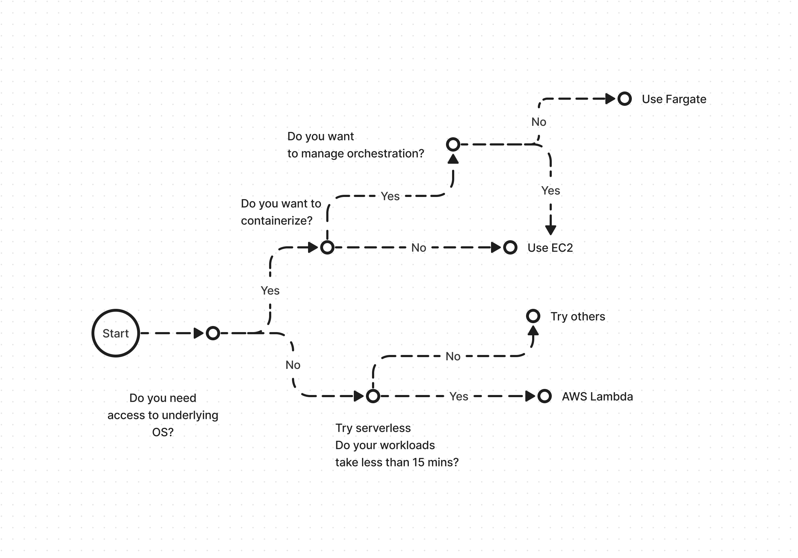
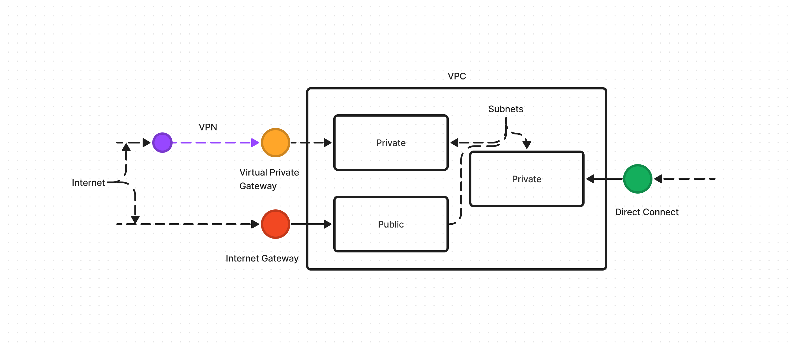

AWS Basics
Introduction
- Notes from the AWS practitioner essentials learning course ware from amazon.
- AWS is built on the client server model
- The client for example a web browser sends a request to the server for example a AWS EC2 cluster
- The server returns the information requested
- AWS works in a pay as you go model where you can add or remove resources as needed
graph LR
A[Client] --> B[Server];
B --> A;- Existing applications are moved to cloud
- New applications are built in cloud
- Run all parts of the application in the cloud
- Use virtualization and other technologies with own data centers
- Also called private cloud
- Connect parts of current applications to cloud
- Needed sometimes for better maintenance of the applications on OnPremise
- Regulatory compliance could also be a factor
Eg. batch processing automatin is in cloud but all other aspects are OnPremise
- Benefits of cloud:
- Variable costs over upfront costs
- No need to maintain own data centers
- Scale in and scale out based on demand. no guessing
- Build massive economies of scale. Aggregated use by multiple customers results in low pay as you go price
- speed and agility
- Global deployments in minutes
Compute
-
EC2 - Elastic Compute Cloud:
- These are virtual servers which can be procured on demand instantly
- Amazon takes care of procuring, securing and enabling them on the internet
- Makes use of virtualization technology that helps spin up virtual servers
- A "Hypervisor" helps share resources of the host machine between virtual servers and isolating them
- This is also called multi-tenancy and is managed by AWS
- We can choose the following aspects when requesting EC2 instances:
- OS
- Number of instances
- Applications that run on the server
- Networking preferences - public, private etc.
- EC2 instances can be vertically scaled i.e. the capacity can be added if application is maxing out the server resources
-
EC2 Instance types:
- Optimization is based on 3 main criterion:
- Compute
- Memory
- Storage
- Optimization is based on 3 main criterion:
| Type | Optimized for | Examples | Key notes |
|---|---|---|---|
| General Purpose | Balance between all aspects | variety of workloads like app servers, game servers, S/M DBs | useful when compute, memory and storage need is equivalent |
| Compute Optimized | high performance compute | high performace web apps, dedicated game servers, batch processing | Used in cases similar to general purpose but need HPC |
| Accelerated Compute | Compute + Accelerator | graphics processing, data pattern matching | cases where CPU based compute does not meet requirements |
| Memory Optimized | Memory | high performace databases | Used when CPU processing needs large amount of data to be preloaded |
| Storage Optmized | Storage | ditributed file systems, warehousing | IOPS = I/O per second. Used when we need high IOPS |
- Pricing:
| Plan | Notes |
|---|---|
| On-Demand | Useful for unpredictable workloads that cannot be interrupted |
| Reserved Instances | Two types standard and convertible. Can be bought in 1y or 3y terms. need to specify type, size, tenancy, os, availability zone |
| Savings Plan | hourly spend commitment to an instance type and region for 1y or 3y term. Saves 72% as compared to on-Demand |
| Spot Instances | Bid on available resources at AWS for upto 90% off but can be taken away with a 2 min notice |
| Dedicated Instances | Physical servers that are fully dedicated for ones use. Most expensive |
- Scaling:
- Scaling means starting out with the resources you need and designing your architecture to scale out or in based on demand
- Automatic scaling process is provided by Amazon EC2 auto-scaling service
- The service has 3 modes:
- Dynamic scaling: Responds to changing demand
- Predictive scaling: Schedules resources based on predicted loads
- Hybrid: Both dynamic and predictive scaling can be used together for faster scaling
- The scaling happens in a programatic way
- For auto scaling you need to specify:
- Minimum requirements: Bare minimum required to run the application
- Desired requirements: Defaults to minimum if not specified
- Maximum requirements: Maximum in case of load
- In either case the charges are per use
- Load balancing:
- If scaling solves the problem of overloading a single server load balancing solves the problem of distributing the load
- Elastic load balancing distributes the load based on least amount of outstanding requests
- The front end only refers to the Load balancer URL and hence decoupled from application servers and are unconcerned about scaling of compute resources
- ELB is auto scaled as well with no change to hourly rate
- ELB along with Auto scaling provide high availability and performance

- Messaging Queuing:
- There are two main types of architectures:
- Monolithic
- Tightly coupled
- When one part fails other parts are impacted
- Microservice based
- Multiple independent components that talk to each other
- Loosely coupled
- Less prone to failures. Fault tolerant
- Monolithic
- The services that enable communication that in turn enables fault tolerant architectures are:
- SNS - Simple notification service
- Pub/Sub model
- One shot publishing a message, notification, http request to multiple subscribing applications
- SQS - Simple Queuing service
- A queue where messages are stored until the recieving application processes it
- SNS - Simple notification service
- Both of these applications do not require the recieving application to be available
- There are two main types of architectures:
-
Other compute products:
- AWS Lambda
- AWS Elastic Container Service
- AWS Elastic Kubernetes service
- AWS Fargate
In order to decide which one to consider use the below decision matrix: 
Global Infra and Reliability
- AWS ditributes its data centers accross the world and calls it "Regions"
- Each region has multiple data centers and they are all connected with fiber optic connectivity
- This is done to provide highly available and fault tolerant infrastructure
Regions
- There are 4 main criterion to consider while choosing a region:
- Compliance
- Proximity
- Feature availability
- Pricing
Availability Zones
- Availability zones are data centers or collection of them physically isolated withing a region
- As a best practice we should have resources deployed in 2 AZs at any time to be fault tolerant
- Any AWS service that is tagged "Regionally scoped service" is automatically regionally highly available e.g. Load balancer
Edge locations
- These are locations with cached copy of the application and its data to serve nearby customers
- This is basically a CDN and is called Amazon CloudFront
- The networking is done using Amazon DNS service Route53
- In case the customers need a local copy that is installed in their buildings then use AWS Outposts
How to provision AWS resources
How to interact:
- "Management Console"
- Browser based console to manually manage and monitor resources
- "AWS CLI"
- A command line utility to script AWS commands and automate the management
- "SDKs"
- Programming language specific development kits to automate the management
How to provision: - Using the interaction tools - Elastic beanstalk - EC2 based tool - Takes code and desired configuaration and inputs and builds the infrastructure - Provides visibility as well - AWS Cloud formation - IaC tool - Can be used with a host of services not just EC2 - Uses text based configuration files to build resources - Less prone to error
Networking
Virtual Private Cloud
- VPC is essentially a private network inside AWS
- Inside the VPC services can be arranged based on the requirements in buckets called subnets.
- There are 2 possible subnets:
- Public
- Private
-
Considering 3 possible scenarios based on requests:
- Public requests to AWS cloud via open internet
- Use internet gateway
- E.g. Users requesting access to our site
- Private requests to AWS cloud via VPN over open internet
- Use virtual private gateway
- Data center connections, internal users contacting the network via a VPN
- Private requests to AWS cloud via a dedicated network
- Use AWS direct connect
- This reduces network costs and increases bandwidth
- Data center connections routed via direct connect locations and connecting via virtual private gateway

- Public requests to AWS cloud via open internet
Network ACLs and Security groups
- The access to VPC is granted by gateways.
- But this only secures the perimeter
- The subnets inside the VPC are accessed via the network access lists (Network ACLs) of the gateway
- These are stateless firewalls which allow or deny access to the subnets based on a list
- The default ACL allows all inbound and outbound traffic
- Custom ACLs can be used to decide security on this level
- Once the packets are inside the subnet the EC2 instances need a security layer on their level as well
- This is called a Security group
- These are stateful systems that allow or deny packets to the EC2 instances
- Security groups are implicit deny which means only the allowed traffic is let in
GLobal networking
- When a customer tried to connect to say a company website it uses a DNS resolver
- The DNS resolver translates the request to an IP address and allows the connection to the website
- Amazon has Route 53 to provide DNS resolution
- It helps connect infrastructure inside and outside AWS as well
- It has certain strategies to achieve DNS resolution:
- Geolocation based
- Geoproximity based
- Latency based
- Weighted round robin
- Another service that provides Global networking is Amazon CloudFront which is a CDN
Storage and Databases
Block storage
- EC2 instances have associated block storage but they are ephemeral and data is tied to EC2 lifecycle
- To solve this problem amazon provides EBS or Elastic block storage
- These can be provisioned as per size needs and attached to EC2 and the data persists
- EBS allows to take regular snapshots of data so that disaster recovery is possible
- These backups are incremental i.e. only the data that is changed is backed up
- Stores data in an Availability zone
Simple Storage Service
- Amazon stores the files as objects
- An object is the file itself, metadata and a key
- These objects are stored inside buckets (think folders)
- Maximum size of the object is 5TB
- Durability: 99.99999999%
- The objects can be stored in multiple tiers namely:
- S3 standard
- S3 Infrequent Access
- S3 one zone Infrequest access
- S3 Intelligent tiering
- S3 Glacier Instant retrieval
- S3 Glacier Flexible retrival
- S3 Deep archive
- S3 outposts
- Amazon also provides lifecycle policies that can control the tiers based on usage and number of days for example
EBS vs S3
- If you have a single file where you need to do micro edits choose EBS
- If you have large files that need to be dealt with as discrete objects then use S3
Elastic File System
- True managed Linux file system
- The system supports multiple read and write connections
- Scales automatically
- Regionally scoped. EBS is AZ scoped
- On-premises can access data using Amazon Direct connect
Relational databases
- AWS supports relational databases to be installed on EC2 servers
- Supported databases:
- PostgreSQL
- Oracle
- MySQL
- MariaDB
- This is typically called lift-and-shift
- That way all of the current database activities and variables are available from the cloud
- It automates tasks such as hardware provisioning, database setup, patching, and backups.
- However, if we need a more managed approach then we can use Amazon Relational database System or RDS
- Amazon aurora is fully managed professional database system in the cloud
- It supports PostgreSQL and MySQL and provides the service at 1/10th the cost of other offerings
- It replicates six copies of your data across three Availability Zones and continuously backs up your data to Amazon S3.
Amazon DyanmoDB
- Dynamo DB is a fully managed serverless (no need to provision, patch or manage servers) database
- It is a non-relational and no-sql database specifically a key-value database
- It stores data as items and attributes
- It also has millisecond response times
- It is purpose built i.e. it only suits a certain work loads
Amazon Redshift
- Managed data warehousing solution
- Warehousing is used when we try to answer the question "what happened"
- Used for big data analytics and BI analytics workflows
Amazon Data migration service
- Used when:
- migrating onPremise data to cloud
- production to dev and test database
- consolidating databases
- continuous replication
- Can be used to move data from different databases as well
- For example OP MySQL can be migrated to Cloud PostgreSQL
- The source database does not stop during migration and can still be accessed
Additional databases
| Service | Type | Use | Remarks |
|---|---|---|---|
| DocumentDB | Database | User profiles etc | MongoDB workloads |
| Neptune | Database | Social network, fraud detection | Graph database |
| Quantum Ledger | Database | compliance Audits | Immutable database entries |
| Elasticache | Accelerator | comes in redis and memcached flavours | improves fetch from databases |
| DynamoDB accelerator | Accelerator | improves DynamoDB fetches |
Security
Shared responsibility model
- Security of the cloud - Owned by AWS
- Physical infrastructure
- Servers
- Hypervisors
- Security in the cloud - Owned by the customers
- OS
- Applications
- Data
Identity & Access Management
- AWS provides a variety of options to control the access to the platform and its services
- Root User:
- Has access to everything
- Best practice is to add MFA as soon as 1st login
- Create new users based on tasks and assign permissions and use the created users to do tasks
- Users, User groups, policies:
- Root can create users and add them to user groups
- The activities they can perform are governed by policies
- Policies define the activities users or user groups can perform, resources they can access
- Roles:
- Allows users to assume temporary responsibility and do tasks
- Root User:
graph TD
A[root user] -->|policies| B[user 1];
A -->|policies| C[user 2];
A -->|policies| D[user group 1];
D -->|inherited policies| E[user 4];
D -->|inherited policies| F[user 5];
A -->|temporary responsibility| G[user 5 role 1]AWS Organizations
- AWS organizations is a service that allows grouping and managing AWS accounts
- It allows to set SCPs (service control policies) on individual accounts and group of accounts (Organizational units)
graph TD
A[AWS Organization] -->|SCPs| B[Account 1];
A -->|SCPs| C[Account 2];
A -->|SCPs| D[Organization Unit];
D -->|inherited SCPs| E[Account 3];
D -->|inherited SCPs| F[Account 4];Compliance
- AWS has a shared responsibility model
- It completes part of the compliance requirements on its own
- The services and data built on top of AWS the compliance needs to be done by the company
- They can use the compliance functionality themselves or use the exisitng features in AWS
- All compliance reports can be accessed via "AWS Artifacts"
- Compliance center is a one stop solution to get all information related to compliance requirements for various use cases
DDos
- A well architected system is already capable of handling some types of DDos attacks
- For example, security groups and ALB can take care of UDP flood and SLow loris type attacks
- AWS Shield is a service that can be used to protect against sophesticated attacks
- It has 2 modes:
- Standard
- Advanced
- It has a WAF web application firewall that takes care of the bad actor signatures and has ML capabilities
Additional services
- KMS - Key management systems that provides encryption at rest and transit
- Inspector - Regular security scans
- Guard duty - Proactive threat detection with continuous monitoring
Monitoring and Analytics
CloudWatch
- Amazon cloudwatch collects metrics from host of services and helps show them in one place
- It allows to set alarms based on data points to trigger actions
Cloudtrail
- Making changes to the system in AWS is API driven
- Cloudtrail helps to identify changes based on these API calls
- It records who, what, when, how aspects of the change for effective audit
- CloudWatch Insights is a service we can use to detect unusual activity and get alerts
Trusted Advisor
- Web service that provides information based on best practices of using AWS
- It provides information on 5 pillars:
- Cost Optimization
- Performance
- Security
- Fault tolerance
- Service limits
- Useful to avoid high costs and optimize for best use
Pricing and Support
- AWS offers free tier which are either forever free, 12 month free or limited trial free types
- Pricing model is either:
- Pay per use
- Reduced pricing for commitment
- Redeuced pricing for volume based usage
- AWS has a billing dashboard where you can view MTD view of the resource usage
- You can also check Billing info
- AWS offers consolidated billing for users of AWS Organizations
- They can get simplified billing, share premium savings features withing accounts and the service is free
- AWS provides a way to create budgets based on actual or forecasted usage and set alerts
- Its called AWS Budgets
- AWS cost explorer lets you analyze the past data for cost.
- You can create a dashboard and filter by tags to analyze the data
- AWS offers support in the following tiers:
- Basic - Free - limited trusted advisor checks
- Developer - Basic + best practice guidance etc.
- Business - This and above includes AWS Trusted advisor
- Business On-Ramp - This and above includes TAM (Technical Account Manager)
- Business Enterprise
- AWS Marketplace lets you search for tools and apps built on AWS for 1 click solutions
Migration and Innovation
AWS Cloud Adoption Framework
- AWS professional services team has created a framework that helps people migrate to the cloud
- It has 6 pillars and results into an action plan
graph LR A[Cloud Adoption Framework] --> B[Business]; A --> C[People]; A --> D[Governance]; A --> E[Platform]; A --> F[Security]; A --> G[Operations]; B --> H[Business, Finance managers]; C --> I[HR, Staffing]; D --> J[CIO, program managers, enterprise architects] E --> K[CTO, Solution architects] F --> L[CISO, IT Security Managers] G --> M[IT Ops managers]
6 Rs of Migration
graph LR
A[6 Rs] --> |Lift and shift| B[Rehosting]
A --> |Lift tinker and shift| C[Replatforming]
A --> |Remove apps not needed| D[Retire]
A --> |Keep for a limited time| E[Retain]
A --> |New infrastructure for new possibilities| F[Repurchase]
A --> |Changing code to achieve new things|G[Refactor]Snow Family
- Family of physical devices used to transport data from OP to on cloud
- The devices are:
- Snow Cone
- Upto 14TB of storage
- Snow Ball
- Storage optimized
- 80TB of data
- 40cpus
- Compute optimized
- 80TB
- 104 vcpus
- Storage optimized
- Snow Mobile
- Exa bite container truck
- Snow Cone
Innovation
- Serverless
- AWS Lambda
- Machine Learning
- AWS SageMAker
- AI
- Augmented AI
- Code Whisperer
Cloud Journey
AWS Well Architected Framework
- The framework has 6 main pillars
- It is a collection of best practices that helps design or evaluate current AWS systems
- The framework either needs to be evaluated by a Solution architect or needs to be evaluated using a self service tool
graph TD
A[AWS WAF] --> B[Operational Excellence]
A --> C[Security]
A --> D[Cost Optimization]
A --> E[Reliability]
A --> F[Performance Efficiency]
A --> G[Sustainability]